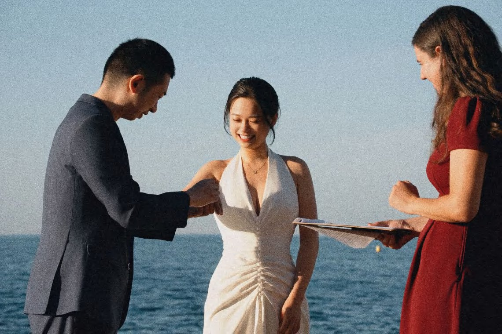
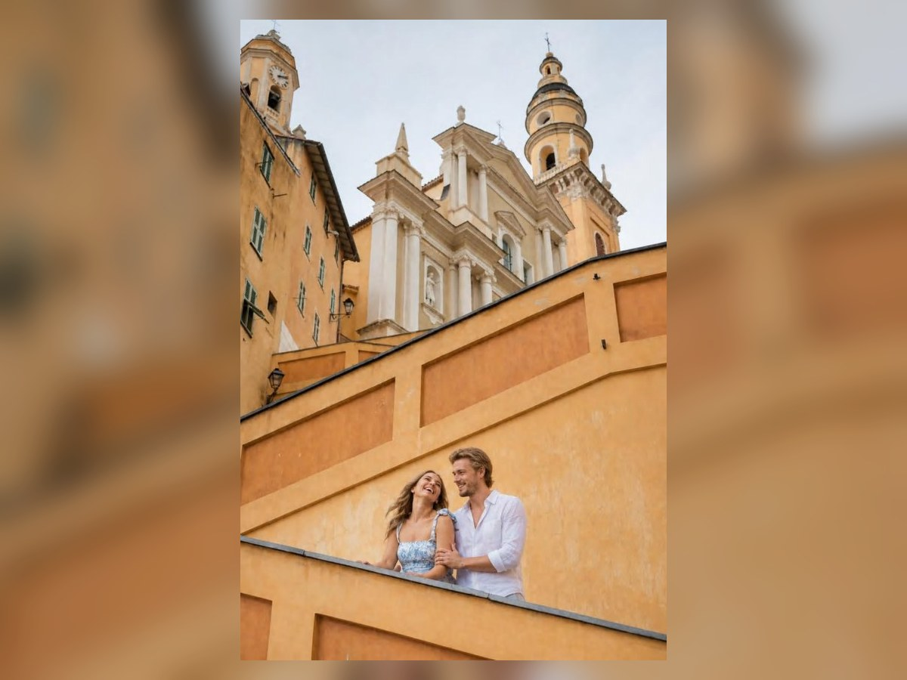
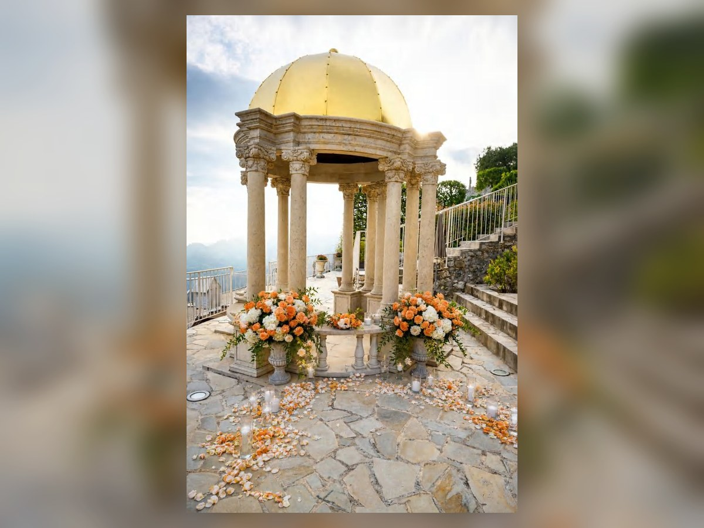
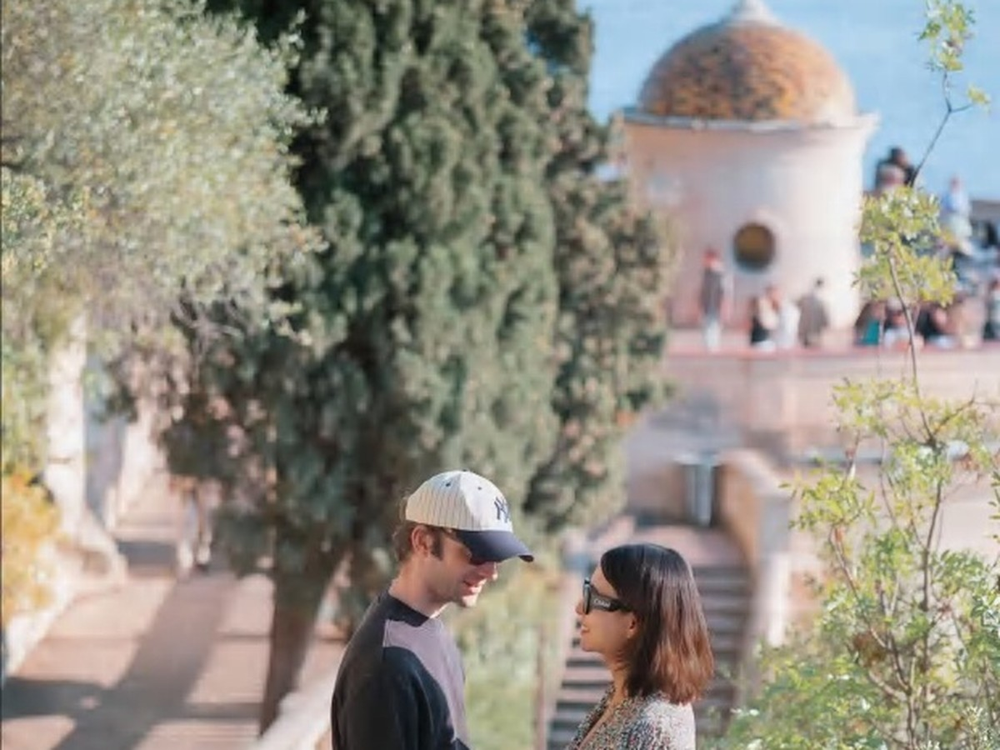
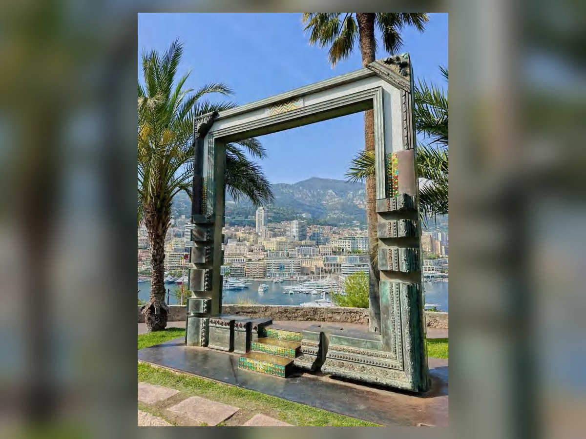
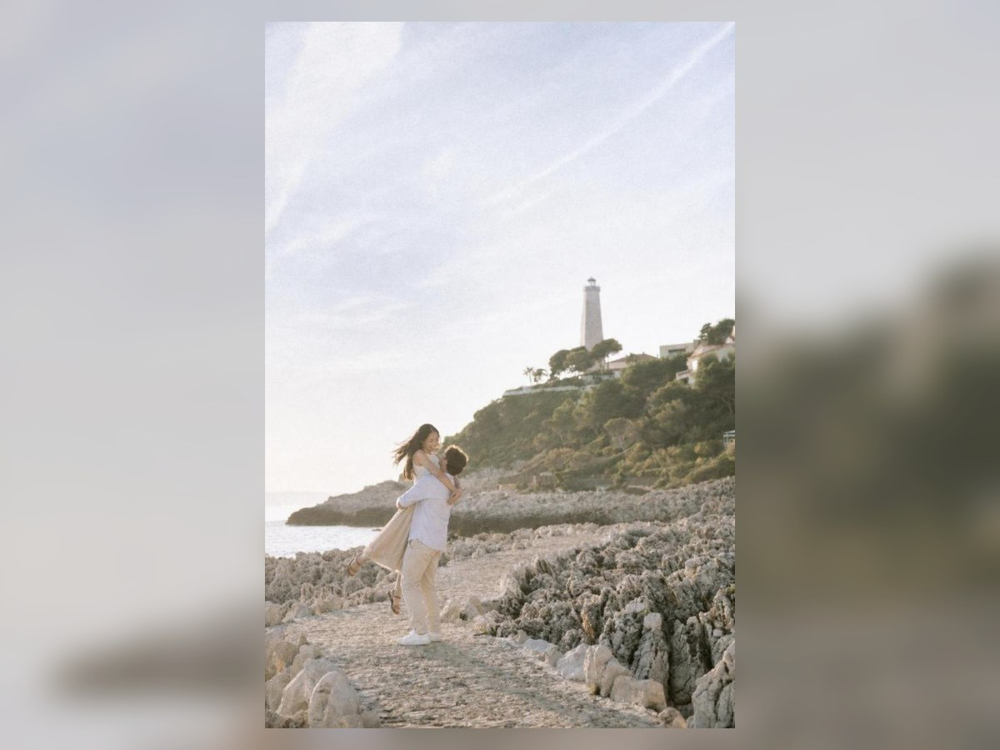
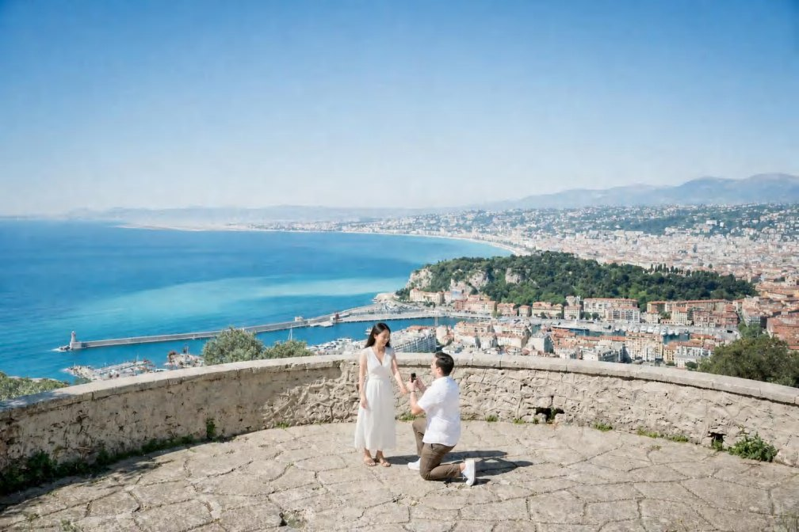

优势
对素材要求相对低，几张强图就能撑出节奏；适合首页或服务页作为精选照片流。
南法婚礼 / 私奔 / 情侣 / 旅行肖像
这个方向学习 Henry Tieu 首页的左右分屏：左边负责明确服务、情绪和咨询入口，右边用一张强图建立第一眼风格。它比纯照片墙更稳，也比现在的占位式首页更有摄影师网站的气质。
这仍然是效果预览。右侧图片只是占位，正式首页需要替换成一张最能代表 Fiona 风格的真实可公开作品。

首页第一屏用 D 建立服务和第一印象，用户继续往下滑就进入 A 的流动精选照片。这个组合更符合接单网站：先说清楚，再用照片持续加深感觉。




对素材要求相对低，几张强图就能撑出节奏；适合首页或服务页作为精选照片流。
如果照片风格不统一，滚动会把问题放大；移动端需要控制速度和图片重量。
当前阶段可落地，置信度高。它最能解决现在页面太静、太像模板的问题。
客户进入首页后，不应该先被迫点进多个页面找信息。首页要连续回答：你拍什么、照片是什么感觉、你是否可信、服务适不适合、怎么咨询。
其他页面可以继续存在，但它们应该是深入阅读，不应该承担第一轮说服的压力。这个方案把主要信息压缩进首页长卷，让用户一路下滑时持续获得新信息。

适合独自来南法、想给自己留下一组自然照片的人。重点是轻松、好看、真实。
适合旅行中的情侣、订婚纪念、求婚之后的轻量拍摄。重点是关系和互动。
适合需要地点、时间和拍摄节奏建议的人。是否包含布置、花艺、香槟需待确认。
适合小型仪式、亲密庆祝或婚礼日记录。服务范围、时长和价格需按项目确认。
首页先把服务类型讲清楚，客户才知道自己应该继续看哪一块。服务页仍然可以保留更详细内容，但首页要完成第一轮分流。
优势：减少“我到底能不能找你拍”的不确定感。风险：未确认的价格、订金、交付周期不能写死。
这里学习 Anni Graham 的连续浏览感，但不照搬满屏三列作品墙。当前更适合用几张强图和文字模块交替出现，让用户一边看照片，一边理解 Fiona 的拍摄方式。
优势：比纯照片墙更适合当前素材阶段。风险：图片必须统一调性，否则首页会显乱。

About 页面已经有内容，所以首页不需要重复完整 About。首页只需要给出最关键的可信信号：Fiona 常驻哪里、如何引导、拍摄时如何照顾不习惯镜头的人。
这才是 KT Merry 类结构真正值得学的地方：不是把 About 页面再做一遍，而是在首页用一个模块让摄影师本人变得真实。



首页可以先写常见拍摄区域：Nice、Villefranche-sur-Mer、Èze、Saint-Jean-Cap-Ferrat、Monaco、Antibes、Cannes、Menton。更远地点另行确认。
优势：外国客户会立刻感到有人带路。风险：具体服务范围必须按 Fiona 实际能覆盖的城市确认。
这块不需要做成复杂流程页，但首页必须降低不确定感。客户看完后应该知道自己只需要先发日期、地点、拍摄类型和喜欢的感觉。
发送日期、地点、拍摄类型和预算范围。
一起判断地点、路线、光线和服务时长。
Fiona 提供自然引导，也保留真实互动。
交付周期、张数、加急和加片规则待确认。
报价会受拍摄时长、地点数量、交通距离、是否求婚或仪式、是否需要前期选址建议、交付范围和加急需求影响。
现在不能编造起价、订金、交付周期、加时费或异地费。正式上线前这些必须由 Fiona 确认。
首页可以直接回答：Fiona 会给清楚、自然的引导，不要求你会摆拍。
可以先写会根据光线、路线和拍摄类型给建议，具体范围待确认。
交付周期未确认前，只能标注待确认，不写死承诺。
先发日期、地点、拍摄类型、人数和喜欢的照片感觉。
这个长卷首页的目的不是取代所有页面，而是让客户在首页完成 80% 的判断。之后他们可以继续点作品、服务、About、FAQ，但已经不需要从零开始理解 Fiona。
这些方案不是照搬对方网站，而是把每个对标拆成可落地模块。当前优先考虑首页、精选照片流、服务解释、About、FAQ、Contact 和未来地点指南。


方案：服务页明确 Nice、Èze、Monaco、Cannes 等区域，并写选址、光线和路线协助。
优势：符合外国客户需求。风险：服务范围必须按 Fiona 实际能力确认。
查看参考
方案：如果 Fiona 愿意公开起价，用轻量文字说明 starting from，并强调最终按日期、地点、时长确认。
优势：减少无效咨询。风险：价格必须由 Fiona 确认。
查看参考这个方向靠照片数量和连续审美取胜。用户往下滑时，照片像一组完整世界观，而不是一格一格的作品占位。
它对真实作品储备要求更高。现在可以先看气质，正式做时必须有足够统一、足够强的照片，否则页面会显得杂。


用一张大图建立第一印象，旁边用几张大小不同的图制造层次。用户不用滑很久也能感觉到风格，同时还保留明确的服务说明和咨询入口。
我更建议当前首页先走这个方向，然后在作品页或服务页局部加入方案 A 的横向照片流。方案 B 等真实作品更多后再完整使用。
这个预览解决的是首页图片呈现方式，不处理价格、评价、服务承诺。现在的方向已经比较清楚：D 做首屏，A 做下滑后的照片流。
置信度：高。适合正式首页首屏。优势是第一眼更像成熟摄影师网站；风险是右侧必须有一张足够强的真实作品。
置信度：高。适合接在 D 下方，能明显减少静态感。风险是照片风格不统一时会显乱。
置信度：中。视觉最强，但需要大量真实作品支撑。现在可以做局部，不建议整站照搬。
置信度：高。更适合作为首页首屏升级，兼顾审美和转化。风险是没有方案 B 那么强烈。